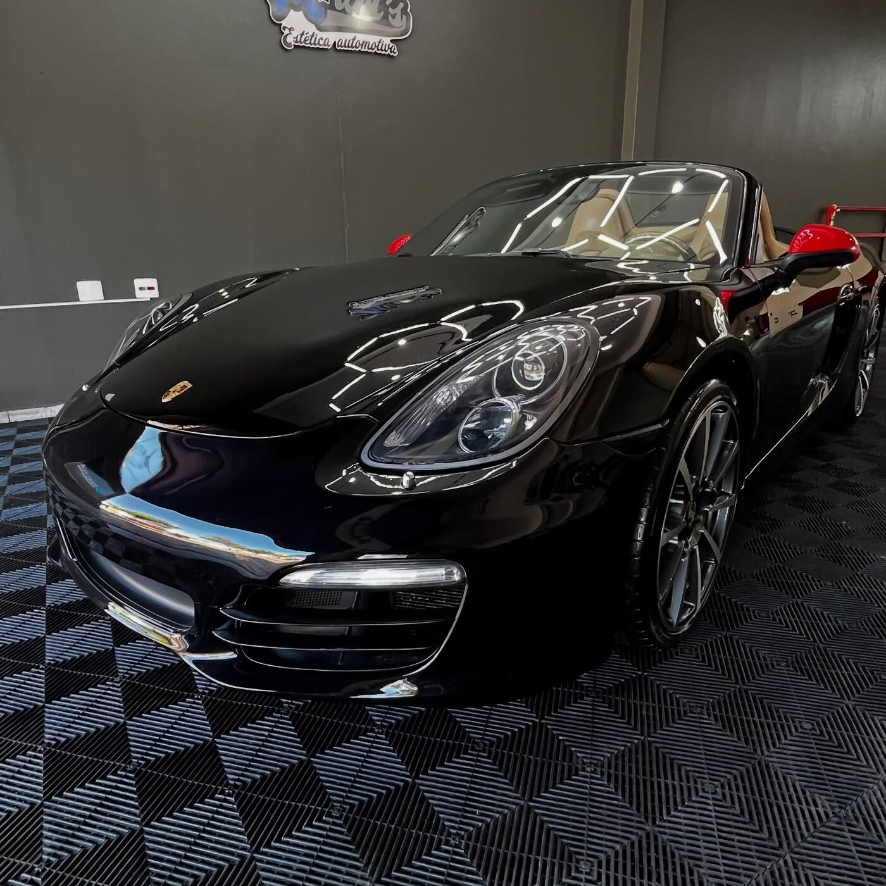
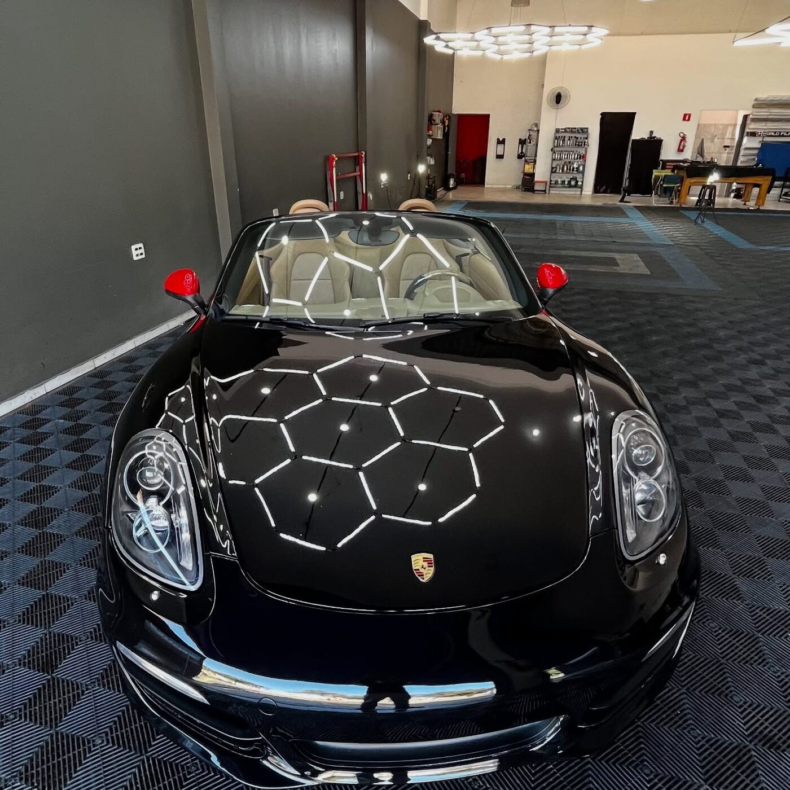
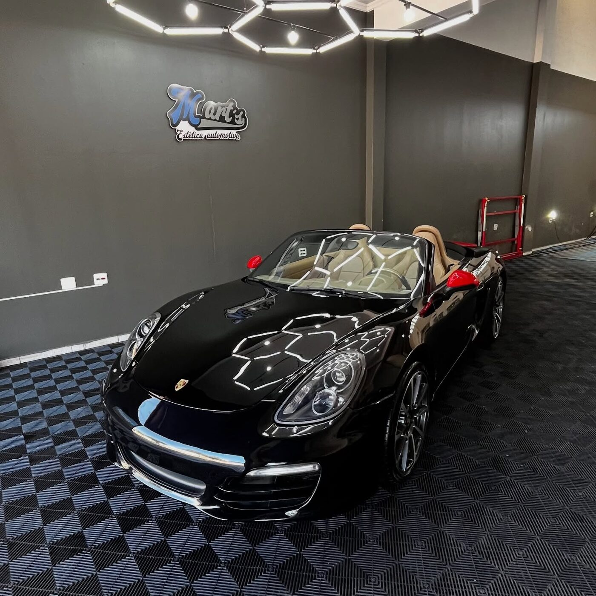

Cada polimento sai revisado sob iluminação técnica em grade hexagonal — o mesmo padrão usado para caçar holograma e microrrisco. É assim que a gente chama de pronto.

Trilho do teto solar, frestas, cava de roda, vão de porta. É nesses pontos que a diferença entre uma lavagem comum e um detalhamento técnico fica evidente.
Correção de pintura em múltiplas etapas, remoção de holograma e microrrisco, acabamento espelhado revisado sob luz hexagonal.

Restauração de brilho em emblemas, frisos e acabamentos cromados ou pretos — com atenção milimétrica.

Emblemas
Restauração de brilho
Frisos
Cromados ou pretos
Acabamentos
Atenção milimétrica

Aplicação técnica do revestimento V-Paint em rodas de liga leve — resistência a calor de freio, sujeira e produtos de limpeza agressivos.
Da descontaminação ao polimento final, a mesma iluminação usada para expor holograma e microrrisco que passam despercebidos à luz do dia.

Do diagnóstico à entrega, e o que mais fazemos, em uma única tabela.
O que a Mart's Estética Automotiva faz?
Detalhamento automotivo técnico: polimento e espelhamento, vitrificação de rodas V-Paint e restauração de emblemas e acabamentos, além de higienização interna, hidratação de bancos em couro, revitalização de plásticos internos e restauração de faróis.
O que é a inspeção sob luz hexagonal?
É a grade de luz técnica do nosso estúdio, o mesmo tipo de iluminação usada para expor holograma e microrrisco que passam despercebidos à luz do dia. Cada etapa, da descontaminação ao polimento final, é revisada sob ela.
O que é a vitrificação de rodas V-Paint?
É a aplicação técnica do revestimento V-Paint em rodas de liga leve, com resistência a calor de freio, sujeira e produtos de limpeza agressivos.
Como funciona o processo?
Quatro etapas, sempre na mesma ordem: diagnóstico, preparação, execução e entrega.
Como faço para agendar?
O atendimento é sob agendamento. Chame no WhatsApp (16) 99271-4317 e confirme o seu horário.
Consigo acompanhar o resultado?
Sim. Fazemos o registro em vídeo do resultado, para você acompanhar o antes e depois do seu carro.
Agende seu horário e veja o antes e depois do seu próprio carro.
Atendimento sob agendamento — confirme pelo WhatsApp.
Agendar meu horárioNº 5030 · @martsesteticaautomotiva · (16) 99271-4317